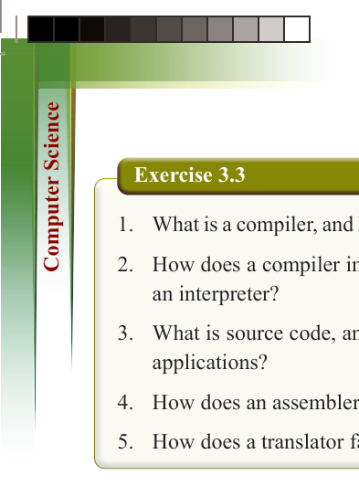
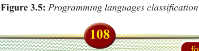
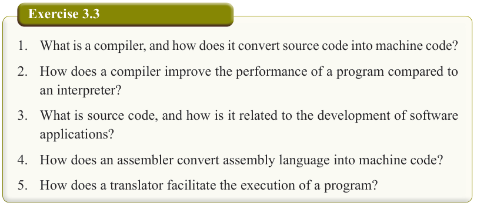
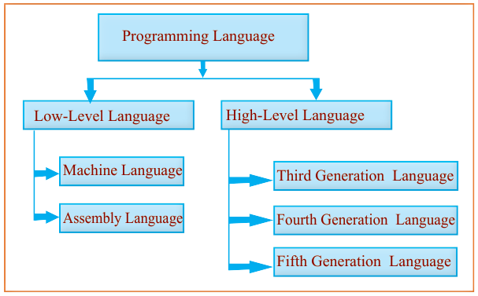

108
for Secondary Schools

Exercise 3.3
1. What is a compiler, and how does it convert source code into machine code?
2. How does a compiler improve the performance of a program compared to an interpreter?
3. What is source code, and how is it related to the development of software applications?
4. How does an assembler convert assembly language into machine code?
5. How does a translator facilitate the execution of a program?
Introduction to programming languages
A programming language is a tool for communicating with a computer. Different languages are suited for different tasks.
Overview of programming languages
A programming language is a formal language comprising a set of instructions that can be used to produce various kinds of output. It enables humans to communicate
commands to a computer, allowing the creation of software programs, control of
machine behavior, and expression of algorithms. Programming languages are essential
for creating software, mobile apps, websites, and other digital technologies. The
programming languages are classified into two types: low-level languages and high- level languages as shown in Figure 3.5.



Programming Language
Low-Level Language
High-Level Language
Fourth Generation Language
Fifth Generation Language
Third Generation Language
Machine Language
Assembly Language
Figure 3.5: Programming languages classification

ComputerScin